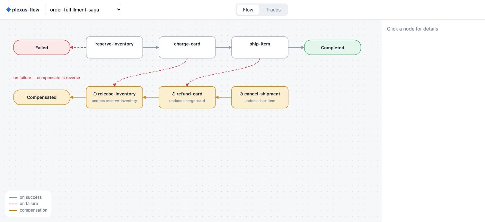
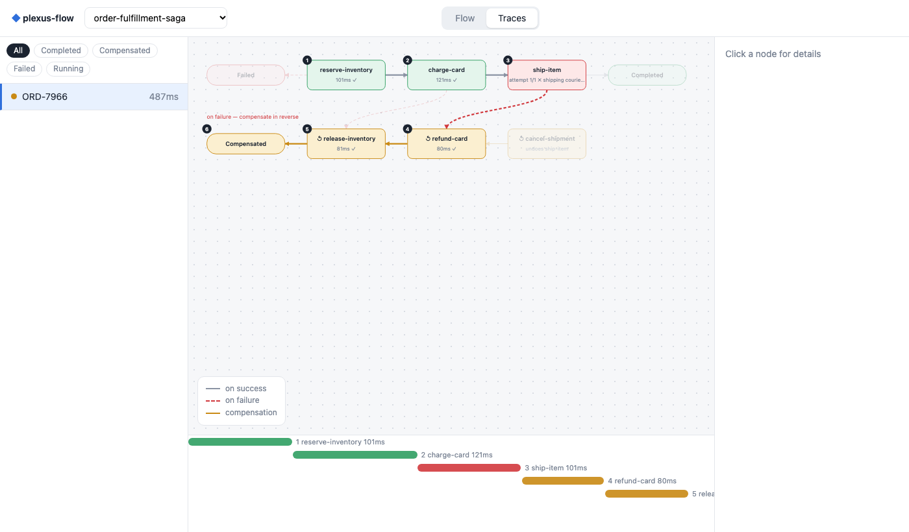

plexus-flow is a workflow orchestration engine built on HashiCorp Raft and BoltDB.
It lets you define multi-stage data pipelines, fan-out/fan-in DAGs, and compensating Sagas in JSON,
and execute steps with standard Go or Python workers—without managing external databases, message queues, or replay determinism rules.
go run ./cmd/plexus-flow \
--id node-1 \
--http-addr :8080 \
--grpc-addr :9090 \
--data-dir ./dataLastProgress on failover./replay while keeping upstream outputs intact.
Inspect how plexus-flow executes parallel data pipelines, handles step failures with targeted replay or LIFO Saga compensation, and recovers in-flight progress when a Raft leader fails.
Developing data pipelines often requires gluing together separate systems for scheduling, batch checkpointing, retries, and metadata search. plexus-flow provides these primitives directly in the state machine.
Workers processing large datasets can attach JSON progress payloads to periodic heartbeats. Checkpoints are replicated via Raft (`LastProgress`), allowing a replacement worker to resume from the last committed offset after a crash.
state = ctx.last_progress or {"offset": 0}
for batch in read_batches(start=state["offset"]):
process(batch)
ctx.heartbeat_progress({"offset": batch.next_offset})
If a downstream step fails due to a bug or schema mismatch, you can deploy a fix and call /replay on that specific step. Upstream steps remain COMPLETED while the target step and its dependents are reset to PENDING.
curl -X POST http://localhost:8080/api/v1/workflows/etl-42/replay \
-H "Content-Type: application/json" \
-d '{"step": "build-vector-index"}'Because orchestration state is stored explicitly in the Raft FSM rather than reconstructed by re-running workflow code, worker activities have no determinism restrictions and can use any standard library or native driver.
worker.RegisterTyped(reg, "embed-chunks",
func(ctx context.Context, in EmbedReq) (EmbedRes, error) {
return runEmbeddingModel(ctx, in.DatasetURI)
})
Steps declare upstream dependencies with depends_on for parallel fan-out and join synchronization. Optional when predicates inspect workflow inputs, metadata, or upstream outputs to skip unneeded branches.
{
"name": "publish-table",
"activity": "iceberg.commit",
"depends_on": ["validate-schema", "redact-pii"],
"when": {
"source": "validate-schema",
"field": "valid",
"op": "eq",
"value": true
}
}
When a workflow spans external resources that lack two-phase commit, each step can specify a compensating_action. On terminal step failure, completed steps are compensated in reverse topological order.
{
"name": "reserve-inventory",
"activity": "inventory.reserve",
"compensating_action": "inventory.release"
}
Workflows can be tagged with key-value metadata. An embedded inverted index is updated synchronously as Raft log entries apply, supporting filtered queries without external search infrastructure.
curl "http://localhost:8080/api/v1/workflows?status=RUNNING&meta.tenant=acme"
plexus-flow pairs an upstream workflow state machine (FlowStore) with a downstream task lease queue (ActivityStore) over a deterministic Raft Graph pipe.
| Aspect | Plexus-Flow Approach | Operational Trade-Off |
|---|---|---|
| Deployment Footprint | Single Go binary with embedded Raft & BoltDB | No external database or broker to operate; requires local disk for Raft logs and snapshots. |
| Workflow Model | Declarative JSON DAGs + stateless Go/Python workers | Simple to reason about and free of replay determinism bugs, though less flexible than arbitrary Turing-complete workflow code. |
| Dispatch Guarantees | Deterministic Raft Graph key (UpstreamID:Term:Index:Seq) + lease attempts |
Prevents duplicate task creation across leader failovers; external side effects should still use the provided task key or checkpoint token for idempotency. |
| State Storage | Active workflows in memory (backed by BoltDB); terminal workflows compacted to cold archive | Provides sub-millisecond reads and search for active runs, bounded by configuring --retention-ttl and --max-completed-workflows. |
The repository includes automated multi-node Raft failover, worker disconnect, and race-detector test suites in test/battletest_test.go.
Verifies 3-node cluster formation, follower-to-leader HTTP/gRPC command forwarding, and continued operation after a node shutdown.
Kills the Raft leader while a remote worker is streaming progress checkpoints and verifies the new leader resumes the task from LastProgress.
Stops the leader mid-rollback and confirms the surviving quorum finishes the remaining LIFO compensation steps.
Disconnects half of the worker pool during execution and injects delayed completions from superseded attempts to verify lease fencing.
Executes 80 concurrent branching workflows and Sagas across a 4-shard ShardedCoordinator with concurrent search and SSE subscribers under -race.
Verifies that duplicate (UpstreamID, Term, Index, Seq) task emissions are ignored across FSM snapshot restores and BoltDB restarts.
go test -v -race -run TestBattle ./testEvery node serves a web interface on its HTTP port for inspecting workflow topologies, step payloads, and execution timelines over Server-Sent Events.

Displays step dependencies, conditional branches, compensating actions, and current execution status.

Shows per-step timing, retry counts, JSON inputs/outputs, and error messages in real time.